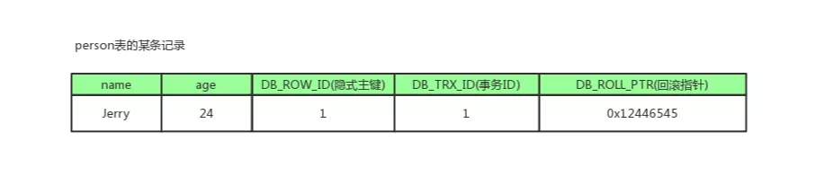
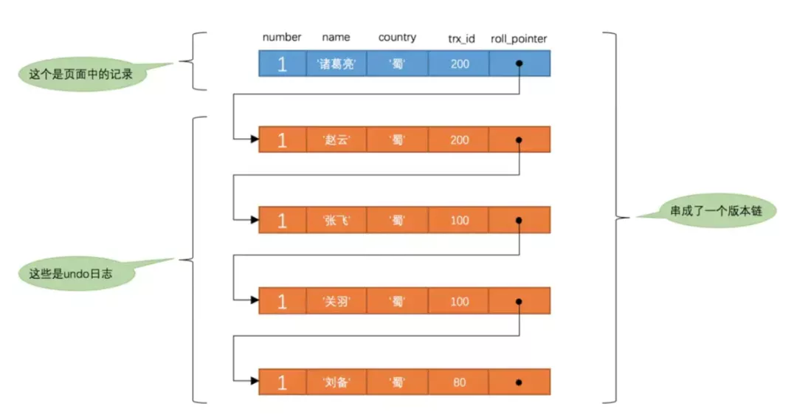

1. MVCC多版本并发控制
全称Multi-Version Concurrency Control，即多版本并发控制，主要是为了提高数据库的并发性能
同一行数据平时发生读写请求时，会上锁阻塞住。但mvcc用更好的方式去处理读—写请求，做到在发生读—写请求冲突时不用加锁。
这个读是指的快照读，而不是当前读，当前读是一种加锁操作，是悲观锁。
1.1. 什么是快照读？什么是当前读？
1.1.1. 当前读
它读取的数据库记录，都是当前最新的版本，会对当前读取的数据进行加锁，防止其他事务修改数据。是悲观锁的一种操作。
如下操作都是当前读：
- select lock in share mode (共享锁)
- select for update (排他锁)
- update (排他锁)
- insert (排他锁)
- delete (排他锁)
- 串行化事务隔离级别
1.1.2. 快照读
快照读的实现是基于多版本并发控制，即MVCC，既然是多版本，那么快照读读到的数据不一定是当前最新的数据，有可能是之前历史版本的数据。
如下操作是快照读：
- 不加锁的select操作（注：事务级别不是串行化）
1.1.3. 快照读与mvcc的关系
MVCC是“维持一个数据的多个版本，使读写操作没有冲突”的一个抽象概念。
1.2. 数据库并发场景
读-读：不存在任何问题，也不需要并发控制读-写：有线程安全问题，可能会造成事务隔离性问题，可能遇到脏读，幻读，不可重复读写-写：有线程安全问题，可能会存在更新丢失问题，比如第一类更新丢失，第二类更新丢失
1.3. MVCC解决并发哪些问题？
mvcc用来解决读—写冲突的无锁并发控制，就是为事务分配单向增长的时间戳。为每个数据修改保存一个版本，版本与事务时间戳相关联。
读操作只读取该事务开始前的数据库快照。
解决问题如下：
并发读-写时：可以做到读操作不阻塞写操作，同时写操作也不会阻塞读操作。- 解决
脏读、幻读、不可重复读等事务隔离问题，但不能解决上面的写-写 更新丢失问题。
因此有了下面提高并发性能的组合拳：
MVCC + 悲观锁：MVCC解决读写冲突，悲观锁解决写写冲突MVCC + 乐观锁：MVCC解决读写冲突，乐观锁解决写写冲突
1.3.1. MVCC的实现原理
它的实现原理主要是版本链，undolog ，Read View来实现的
版本链
我们数据库中的每行数据，除了我们肉眼看见的数据，还有几个隐藏字段，分别是db_trx_id、db_roll_pointer、db_row_id。
db_trx_id
6byte，最近修改(修改/插入)
事务ID：记录创建这条记录/最后一次修改该记录的事务ID。db_roll_pointer（版本链关键）
7byte，
回滚指针，指向这条记录的上一个版本（存储于rollback segment里）db_row_id
6byte，隐含的
自增ID（隐藏主键），如果数据表没有主键，InnoDB会自动以db_row_id产生一个聚簇索引。实际还有一个
删除flag隐藏字段, 记录被更新或删除并不代表真的删除，而是删除flag变了

如上图，db_row_id是数据库默认为该行记录生成的唯一隐式主键，db_trx_id是当前操作该记录的事务ID，而db_roll_pointer是一个回滚指针，用于配合undo日志，指向上一个旧版本。
每次对数据库记录进行改动，都会记录一条undo日志，每条undo日志也都有一个roll_pointer属性（INSERT操作对应的undo日志没有该属性，因为该记录并没有更早的版本），可以将这些undo日志都连起来，串成一个链表，所以现在的情况就像下图一样：

对该记录每次更新后，都会将旧值放到一条undo日志中，就算是该记录的一个旧版本，随着更新次数的增多，所有的版本都会被roll_pointer属性连接成一个链表，我们把这个链表称之为版本链，版本链的头节点就是当前记录最新的值。另外，每个版本中还包含生成该版本时对应的事务id，这个信息很重要，在根据ReadView判断版本可见性的时候会用到。
Undo log
Undo log 主要用于记录数据被修改之前的日志，在表信息修改之前先会把数据拷贝到undo log里。
当事务进行回滚时可以通过undo log 里的日志进行数据还原。
Undo log 的用途
- 保证
事务进行rollback时的原子性和一致性，当事务进行回滚的时候可以用undo log的数据进行恢复。 - 用于MVCC
快照读的数据，在MVCC多版本控制中，通过读取undo log的历史版本数据可以实现不同事务版本号都拥有自己独立的快照数据版本。
undo log主要分为两种：
insert undo log
代表事务在insert新记录时产生的undo log , 只在事务回滚时需要，并且在事务提交后可以被立即丢弃
update undo log（主要）
事务在进行update或delete时产生的undo log ; 不仅在事务回滚时需要，在快照读时也需要；
所以不能随便删除，只有在快速读或事务回滚不涉及该日志时，对应的日志才会被purge线程统一清除
Read View(读视图)
事务进行快照读操作的时候生产的读视图(Read View)，在该事务执行的快照读的那一刻，会生成数据库系统当前的一个快照。
记录并维护系统当前活跃事务的ID(没有commit，当每个事务开启时，都会被分配一个ID, 这个ID是递增的，所以越新的事务，ID值越大)，是系统中当前不应该被本事务看到的其他事务id列表。
Read View主要是用来做可见性判断的, 即当我们某个事务执行快照读的时候，对该记录创建一个Read View读视图，把它比作条件用来判断当前事务能够看到哪个版本的数据，既可能是当前最新的数据，也有可能是该行记录的undo log里面的某个版本的数据。
Read View几个属性
trx_ids: 当前系统活跃(未提交)事务版本号集合。low_limit_id: 创建当前read view 时“当前系统最大事务版本号+1”。up_limit_id: 创建当前read view 时“系统正处于活跃事务最小版本号”creator_trx_id: 创建当前read view的事务版本号；
Read View可见性判断条件(判断当前应该查询哪个快照)
db_trx_id<up_limit_id||db_trx_id==creator_trx_id（显示）如果数据事务ID小于read view中的
最小活跃事务ID，则可以肯定该数据是在当前事务启之前就已经存在了的,所以可以显示。或者数据的
事务ID等于creator_trx_id，那么说明这个数据就是当前事务自己生成的，自己生成的数据自己当然能看见，所以这种情况下此数据也是可以显示的。db_trx_id>=low_limit_id（不显示）如果数据事务ID大于read view 中的当前系统的
最大事务ID，则说明该数据是在当前read view 创建之后才产生的，所以数据不显示。如果小于则进入下一个判断db_trx_id是否在活跃事务（trx_ids）中不存在：则说明read view产生的时候事务已经commit了，这种情况数据则可以显示。已存在：则代表我Read View生成时刻，你这个事务还在活跃，还没有Commit，你修改的数据，我当前事务也是看不见的。
1.3.2. MVCC和事务隔离级别
上面所讲的Read View用于支持RC（Read Committed，读提交）和RR（Repeatable Read，可重复读）隔离级别的实现。
RR、RC生成时机
RC隔离级别下，是每个快照读都会生成并获取最新的Read View；- 而在
RR隔离级别下，则是同一个事务中的第一个快照读才会创建Read View,之后的快照读获取的都是同一个Read View，之后的查询就不会重复生成了，所以一个事务的查询结果每次都是一样的。
解决幻读问题
快照读：通过MVCC来进行控制的，不用加锁。按照MVCC中规定的“语法”进行增删改查等操作，以避免幻读。当前读：通过next-key锁（行锁+gap间隙锁）来解决问题的。
RC、RR级别下的InnoDB快照读区别
- 在RR级别下的某个事务的对某条记录的第一次快照读会创建一个快照及Read View， 将当前系统活跃的其他事务记录起来，此后在调用快照读的时候，还是使用的是同一个Read View，所以只要当前事务在其他事务提交更新之前使用过快照读，那么之后的快照读使用的都是同一个Read View，所以对之后的修改不可见；
- 即RR级别下，快照读生成Read View时，Read View会记录此时所有其他活动事务的快照，这些事务的修改对于当前事务都是不可见的。而早于Read View创建的事务所做的修改均是可见
- 而在RC级别下的，事务中，每次快照读都会新生成一个快照和Read View, 这就是我们在RC级别下的事务中可以看到别的事务提交的更新的原因